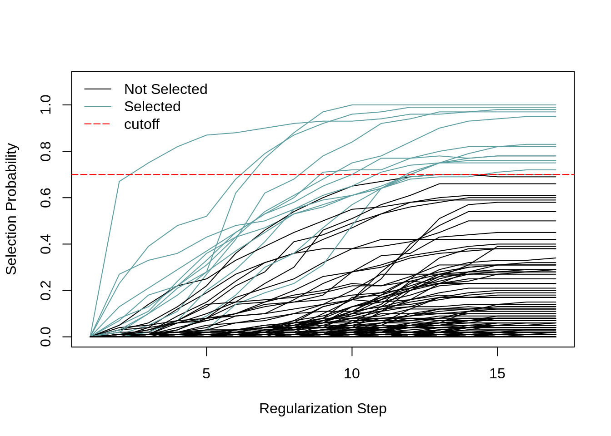
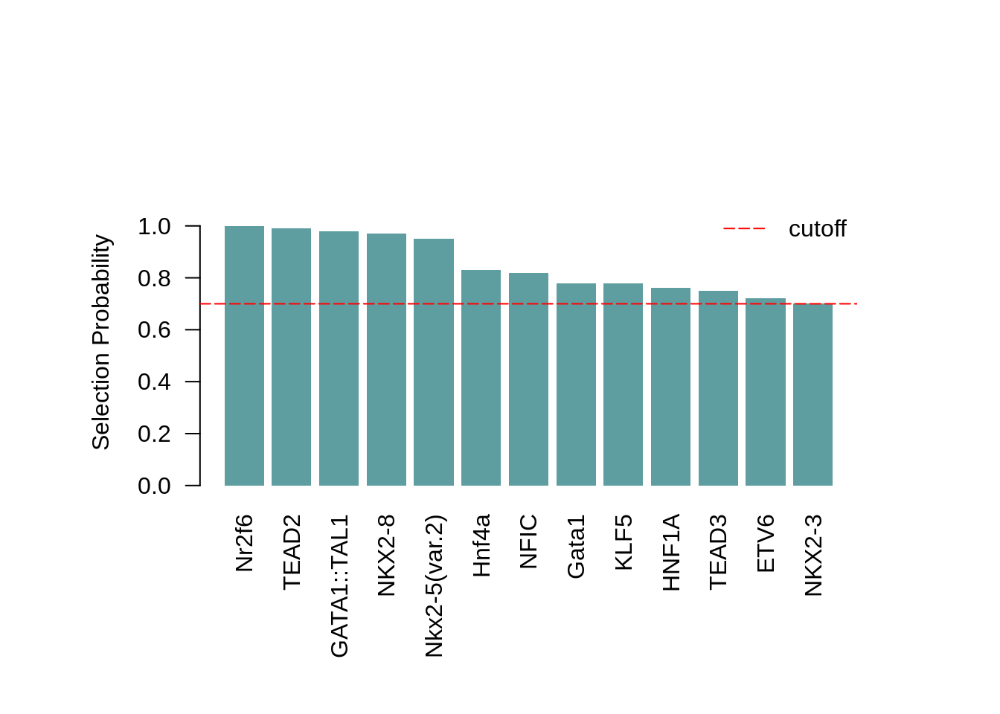
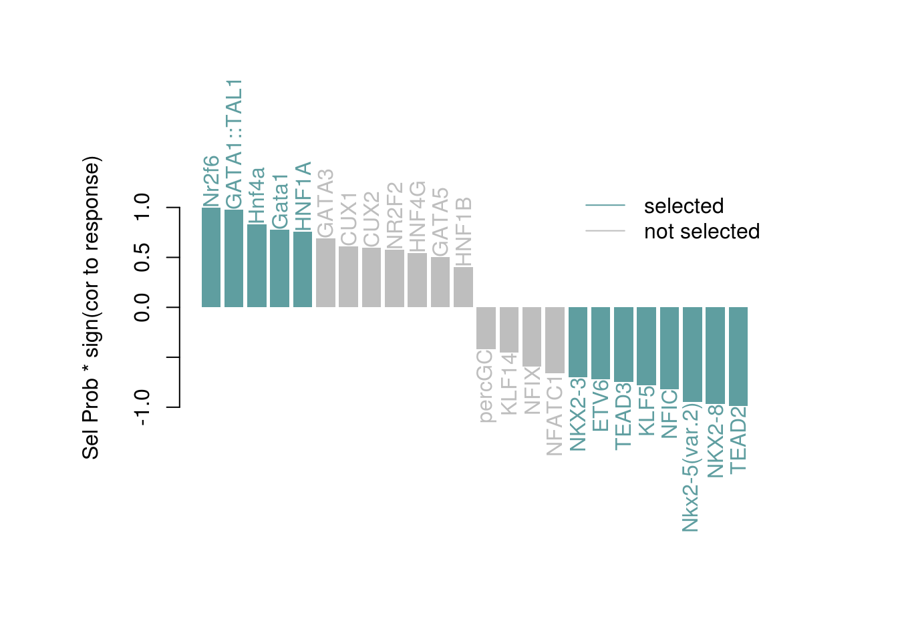
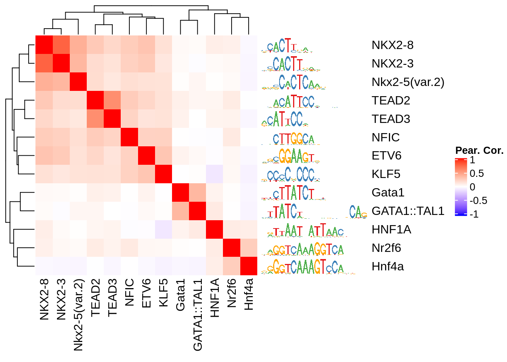

monaLisa - MOtif aNAlysis with Lisa
Dania Machlab, Lukas Burger, Michael Stadler
2020-01-22
monaLisa.Rmd
Introduction
monaLisa is a collection of functions for working with biological sequences and motifs that represent the binding preferences of transcription factors or nucleic acid binding proteins.
For example, monaLisa can make use of her father Homer to look for enriched motifs in sets of genomic regions, compared to all other regions.
The motifs come from a collection of transcription factor binding site specificities, such as JASPAR2018. The regions could be for example promoters, non-promoters (distal regions) or accessible regions. The regions are grouped into bins according to a numerical value assigned to each bin, such as change of expression or accessibility.
monaLisa can also be used to look for motifs in sequences.
Finally, monaLisa can can be used to predict what transcription factors are likely to explain observed changes in chromatin accessibility between two conditions.
Quick example: Identify enriched motifs
# load package
library(monaLisa)
# bin regions
# (atac.peaks.change is a numerical vector)
bins <- bin(x = atac.peaks.change, binmode = "equalN", nElement = 400)
# dump motifs into file
dumpJaspar("jaspar2018.motif", pkg = "JASPAR2018")
# find Homer (findMotifsGenome.pl)
homerfile <- findHomer(dirs = "/path/to/look/into")
# run analysis
# (atac.peaks is a GRanges)
se <- runHomer(gr = atac.peaks, b = bins, genomedir = "/work/gbioinfo/DB/genomes/mm10",
outdir = "myresults", motifFile = "jaspar2018.motif", homerfile = homerfile,
regionsize = "given", Ncpu = 4L)se is a SummarizedExperiment with assays p, FDR, enr and log2enr, each containing a matrix with motifs (rows) by bins (columns). The values are:
-
p: the raw P value (\(-\log_{10} p\)) of a given motif enrichment in a given bin, as reported by Homer. Each P value results from a Homer analysis testing each motif occuring within the bin, compared to its occurrences in all other bins as a background.
-
FDR: Same as p but adjusted for multiple testing using the method of Benjamini and Hochberg, 1995 (
p.adjust(..., method="fdr").
- enr: Motif enrichments, calculated as: \(enr = (o - e) / \sqrt e\), where \(o\) and \(e\) are the observed and expected numbers of regions in the bin containing a given motif. These enrichments correspond to \(z\) values (\(z = (z - \mu)/\sigma\)), assuming that the numbers of regions in a bin that contain a motif are independent Poisson random variables with mean and variance \(e\).
- log2enr: Motif enrichments, calculated as: \(log2enr = log2((o + 8)/(e + 8))\), where \(o\) and \(e\) are the observed and expected numbers of regions in the bin containing a given motif.
In addition, rowData(se) and colData(se) give information about the used motifs and bins, respectively. In metadata(se) you can find information about parameter values.
Detailed example: Finding TFs enriched in differentially methylated regions
The detailed example is based on an in vitro differentiation system, in which mouse embryonic stem (ES) cells are differentiated into neuronal progenitors (NP). In an earlier study (Stadler et al. 2011), we have analyzed the genome-wide CpG methylation patterns in these cell types and identified so call low methylated regions (LMRs), that have reduced methylation levels and correspond to regions bound by transcription factors.
We have later published a tool that systematically identifies such regions from genome-wide methylation data (Burger et al. 2013). Interestingly, a change in methylation of LMRs is indicative of altered transcription factor binding. We will therefore use these regions to identify TF motifs that are enriched/depleted in LMR regions that change their methylation between ES and NP cell states.
Genomic regions of interest
monaLisa contains a file with genomic coordinates (mouse mm9 assembly) of LMRs, with the respective changes of methylation:
lmrfile <- system.file("extdata", "LMRsESNPmerged.gr.rds", package = "monaLisa")
lmr <- readRDS(lmrfile)
lmr
#> GRanges object with 45425 ranges and 1 metadata column:
#> seqnames ranges strand | deltaMeth
#> <Rle> <IRanges> <Rle> | <numeric>
#> [1] chr1 3539234-3540282 * | 0.3190299
#> [2] chr1 3670995-3672245 * | 0.0657352
#> [3] chr1 3903396-3904604 * | 0.4803313
#> [4] chr1 3943581-3944238 * | 0.4504727
#> [5] chr1 4140538-4141648 * | 0.5014768
#> ... ... ... ... . ...
#> [45421] chrY 2887848-2888104 * | -0.020020382
#> [45422] chrY 2890206-2890704 * | -0.102559935
#> [45423] chrY 2891592-2894150 * | -0.031668206
#> [45424] chrY 2895434-2896286 * | 0.130623049
#> [45425] chrY 2901734-2902491 * | 0.000494588
#> -------
#> seqinfo: 35 sequences from an unspecified genomeYou can see there are 45425 LMRs, most of which gain methylation between ES and NP stages:
hist(lmr$deltaMeth, 100, col = "gray", main = "",
xlab = "Change of methylation (NP - ES)", ylab = "Number of LMRs")
In order to keep the computation time reasonable, we’ll select 10,000 of the LMRs randomly:
Bin genomic regions
Now let’s bin our LMRs by how much they change methylation, using the bin function. We are not interested in small changes of methylation, say less than 0.3, so we’ll use the minAbsX argument to create a no-change bin in [-0.3, 0.3). The remaining LMRs are put into bins of 800 each:
bins <- bin(x = lmrsel$deltaMeth, binmode = "equalN", nElement = 800, minAbsX = 0.3)
table(bins)
#> bins
#> [-0.966,-0.269] (-0.269,0.323] (0.323,0.386] (0.386,0.442] (0.442,0.49]
#> 800 4400 800 800 800
#> (0.49,0.532] (0.532,0.582] (0.582,0.862]
#> 800 800 800Because of the asymmetry of methylation changes, there is only a single bin with LMRs that lost methylation and many that gained:

Note that the bin-breaks around the no-change bin are not exactly -0.3 to 0.3. They have been adjusted to have the required 800 LMRs per bin.
Prepare motif enrichment analysis
Next we prepare the Homer-based motif enrichment analysis. We first need to create a file with the motifs that we are interested in. A simple way is to dump the vertebrate motifs from the JASPAR2018 package into a file:
motiffile <- tempfile(fileext = ".motif")
dumpJaspar(motiffile, pkg = "JASPAR2018")
#> Loading required namespace: JASPAR2018
#> extracted 579 motifs from JASPAR2018
#> converting to HOMER format...done
#> [1] TRUENext we need to know where Homer is installed (you may have to adjust the dirs argument below according to your environment):
Run motif enrichment analysis
Finally, we run the analysis. Again, you may have to adjust the genomedir.
This step requires that you have Homer installed on your system. Also, it may take a while, for this reason you do not need to run it, but can just load the results as shown below:
outdir <- tempfile(fileext = ".output")
se <- runHomer(gr = lmrsel, b = bins, genomedir = "/work/gbioinfo/DB/genomes/mm9",
outdir = outdir, motifFile = motiffile, homerfile = homerfile,
regionsize = "given", Ncpu = 20L)In case you did not run the above code, let’s now read in the results:
se is a SummarizedExperiment object which nicely keeps motifs, bins and corresponding metadata together:
# summary
se
#> class: SummarizedExperiment
#> dim: 579 8
#> metadata(12): regions bins ... param.Ncpu motif.distances
#> assays(4): p FDR enr log2enr
#> rownames(579): Ahr.Arnt_P30561.P53762_SELEX
#> Alx1_Q8C8B0_universalproteinbindingmicroarray ...
#> ZNF740_Q8NDX6_HTSELEX ZSCAN4_Q8NAM6_HTSELEX
#> rowData names(3): motif.name motif.pfm motif.percentGC
#> colnames(8): [-0.966,-0.269] (-0.269,0.323] ... (0.532,0.582]
#> (0.582,0.862]
#> colData names(4): bin.names bin.lower bin.upper bin.nochange
dim(se) # motifs-by-bins
#> [1] 579 8
# motif info
rowData(se)
#> DataFrame with 579 rows and 3 columns
#> motif.name
#> <character>
#> Ahr.Arnt_P30561.P53762_SELEX Ahr.Arnt_P30561.P53762_SELEX
#> Alx1_Q8C8B0_universalproteinbindingmicroarray Alx1_Q8C8B0_universalproteinbindingmicroarray
#> ALX3_O95076_HTSELEX ALX3_O95076_HTSELEX
#> Alx4_O35137_universalproteinbindingmicroarray Alx4_O35137_universalproteinbindingmicroarray
#> Ar_P19091_HTSELEX Ar_P19091_HTSELEX
#> ... ...
#> ZNF384_Q8TF68_ChIPseq ZNF384_Q8TF68_ChIPseq
#> ZNF410_Q86VK4_HTSELEX ZNF410_Q86VK4_HTSELEX
#> Znf423_O08961_SELEX Znf423_O08961_SELEX
#> ZNF740_Q8NDX6_HTSELEX ZNF740_Q8NDX6_HTSELEX
#> ZSCAN4_Q8NAM6_HTSELEX ZSCAN4_Q8NAM6_HTSELEX
#> motif.pfm
#> <PFMatrixList>
#> Ahr.Arnt_P30561.P53762_SELEX Ahr.Arnt_P30561.P53762_SELEX; Ahr.Arnt_P30561.P53762_SELEX; Unknown
#> Alx1_Q8C8B0_universalproteinbindingmicroarray Alx1_Q8C8B0_universalproteinbindingmicroarray; Alx1_Q8C8B0_universalproteinbindingmicroarray; Unknown
#> ALX3_O95076_HTSELEX ALX3_O95076_HTSELEX; ALX3_O95076_HTSELEX; Unknown
#> Alx4_O35137_universalproteinbindingmicroarray Alx4_O35137_universalproteinbindingmicroarray; Alx4_O35137_universalproteinbindingmicroarray; Unknown
#> Ar_P19091_HTSELEX Ar_P19091_HTSELEX; Ar_P19091_HTSELEX; Unknown
#> ... ...
#> ZNF384_Q8TF68_ChIPseq ZNF384_Q8TF68_ChIPseq; ZNF384_Q8TF68_ChIPseq; Unknown
#> ZNF410_Q86VK4_HTSELEX ZNF410_Q86VK4_HTSELEX; ZNF410_Q86VK4_HTSELEX; Unknown
#> Znf423_O08961_SELEX Znf423_O08961_SELEX; Znf423_O08961_SELEX; Unknown
#> ZNF740_Q8NDX6_HTSELEX ZNF740_Q8NDX6_HTSELEX; ZNF740_Q8NDX6_HTSELEX; Unknown
#> ZSCAN4_Q8NAM6_HTSELEX ZSCAN4_Q8NAM6_HTSELEX; ZSCAN4_Q8NAM6_HTSELEX; Unknown
#> motif.percentGC
#> <numeric>
#> Ahr.Arnt_P30561.P53762_SELEX 68.4298
#> Alx1_Q8C8B0_universalproteinbindingmicroarray 33.9412
#> ALX3_O95076_HTSELEX 27.6723
#> Alx4_O35137_universalproteinbindingmicroarray 35.4326
#> Ar_P19091_HTSELEX 52.0354
#> ... ...
#> ZNF384_Q8TF68_ChIPseq 15.3461
#> ZNF410_Q86VK4_HTSELEX 38.0729
#> Znf423_O08961_SELEX 65.8069
#> ZNF740_Q8NDX6_HTSELEX 81.2813
#> ZSCAN4_Q8NAM6_HTSELEX 47.6604
head(rownames(se))
#> [1] "Ahr.Arnt_P30561.P53762_SELEX"
#> [2] "Alx1_Q8C8B0_universalproteinbindingmicroarray"
#> [3] "ALX3_O95076_HTSELEX"
#> [4] "Alx4_O35137_universalproteinbindingmicroarray"
#> [5] "Ar_P19091_HTSELEX"
#> [6] "Arid3a_Q62431_SELEX"
# bin info
colData(se)
#> DataFrame with 8 rows and 4 columns
#> bin.names bin.lower bin.upper bin.nochange
#> <character> <numeric> <numeric> <logical>
#> [-0.966,-0.269] [-0.966,-0.269] -0.965517 -0.268531 FALSE
#> (-0.269,0.323] (-0.269,0.323] -0.268531 0.323299 TRUE
#> (0.323,0.386] (0.323,0.386] 0.323299 0.386364 FALSE
#> (0.386,0.442] (0.386,0.442] 0.386364 0.441585 FALSE
#> (0.442,0.49] (0.442,0.49] 0.441585 0.489649 FALSE
#> (0.49,0.532] (0.49,0.532] 0.489649 0.531948 FALSE
#> (0.532,0.582] (0.532,0.582] 0.531948 0.581921 FALSE
#> (0.582,0.862] (0.582,0.862] 0.581921 0.862443 FALSE
head(colnames(se))
#> [1] "[-0.966,-0.269]" "(-0.269,0.323]" "(0.323,0.386]" "(0.386,0.442]"
#> [5] "(0.442,0.49]" "(0.49,0.532]"
# assays: the motif enrichment results
assayNames(se)
#> [1] "p" "FDR" "enr" "log2enr"
assay(se, "log2enr")[1:5, 1:3]
#> [-0.966,-0.269] (-0.269,0.323]
#> Ahr.Arnt_P30561.P53762_SELEX 0.00000000 0.0000000
#> Alx1_Q8C8B0_universalproteinbindingmicroarray 0.07855834 -0.2877679
#> ALX3_O95076_HTSELEX -0.06867203 -0.3094236
#> Alx4_O35137_universalproteinbindingmicroarray 0.14191570 -0.3153208
#> Ar_P19091_HTSELEX -0.89110443 -0.1033845
#> (0.323,0.386]
#> Ahr.Arnt_P30561.P53762_SELEX 0.00000000
#> Alx1_Q8C8B0_universalproteinbindingmicroarray 0.22911758
#> ALX3_O95076_HTSELEX 0.13301082
#> Alx4_O35137_universalproteinbindingmicroarray 0.08260004
#> Ar_P19091_HTSELEX -0.06326640We can plot the results using the plotMotifHeatmaps function, e.g. selecting all factors that have an absolute log2 enrichment of at least 1.0 in any bin:
# select strongly enriched TFs
sel <- apply(assay(se, "log2enr"), 1, function(x) max(abs(x))) > 1.0
sum(sel)
#> [1] 24
seSel <- se[sel, ]
# shorten names
rownames(seSel) <- sub("\\_.*$","",rownames(seSel))
# plot
plotMotifHeatmaps(x = seSel, which.plots = c("log2enr","FDR"), width = 2.0,
cluster = TRUE, maxEnr = 2, maxSig = 10, show_motif_GC = TRUE)
As the Jaspar database contains many similar motifs, it is helpful to show the enrichment heatmap clustered by motif similarity. To this end, we first need to calculate all pairwise motif similarities (measured as maximum Pearson correlation of all possible shifted alignments). As this step may take a while, you can also skip this line of code and load the results using the next line of code.
The order of the TFs in the resulting matrix is consistent with the elements of se
Using this matrix, we can create an hclust object for clustering and plot the clustered heatmap. The plotting of the dendogram is controlled by the parameter show_dendrogram.
# create hclust object, similarity defined by 1 - Pearson correlation
hcl <- hclust(as.dist(1 - SimMat[sel, sel]), method="average")
plotMotifHeatmaps(x = seSel, which.plots = c("log2enr","FDR"), width = 1.2,
cluster = hcl, maxEnr = 2, maxSig = 10,
show_dendrogram=TRUE, show_seqlogo = TRUE,
width.seqlogo = 1.2)
Use monaLisa to annotate genomic regions with predicted motifs
As mentioned monaLisa can also be used to scan sequences for motifs. Here is an example (just on few sequences/motifs for illustration):
# get sequences of promoters as a DNAStringSet
# (could also be a single DNAString, or the name of a fasta file)
library(TxDb.Hsapiens.UCSC.hg19.knownGene)
#> Loading required package: GenomicFeatures
#> Loading required package: AnnotationDbi
#>
#> Attaching package: 'GenomicFeatures'
#> The following object is masked from 'package:GenomeInfoDb':
#>
#> getChromInfoFromUCSC
gr <- promoters(TxDb.Hsapiens.UCSC.hg19.knownGene, upstream = 1000, downstream = 500)[c(1,4,5,10)]
#> Warning in valid.GenomicRanges.seqinfo(x, suggest.trim = TRUE): GRanges object contains 1 out-of-bound range located on sequence
#> chrUn_gl000223. Note that ranges located on a sequence whose length is
#> unknown (NA) or on a circular sequence are not considered out-of-bound
#> (use seqlengths() and isCircular() to get the lengths and circularity
#> flags of the underlying sequences). You can use trim() to trim these
#> ranges. See ?`trim,GenomicRanges-method` for more information.
library(BSgenome.Hsapiens.UCSC.hg19)
#> Loading required package: BSgenome
#> Loading required package: Biostrings
#> Loading required package: XVector
#>
#> Attaching package: 'Biostrings'
#> The following object is masked from 'package:base':
#>
#> strsplit
#> Loading required package: rtracklayer
seqs <- getSeq(BSgenome.Hsapiens.UCSC.hg19, gr)
seqs
#> DNAStringSet object of length 4:
#> width seq names
#> [1] 1500 ACACATGCTACCGCGTCCAGGGGT…CCAGCCGGCTGGAGGGAGGGGCTC uc001aaa.3
#> [2] 1500 GCTATTATCACCTATATTTTCCAG…ACTCTTCTGTGGTCCCAATGAGGT uc001aal.1
#> [3] 1500 ACATGCATGTCACCCATGCCCAGA…AAGAAGAACTTTTAGTATGTACAT uc001aaq.2
#> [4] 1500 TTGGCTCAACTCCTGCCCAGCTCC…CCTCTTTCGGCCCAGCCCAGCTCA uc021oei.1
# get motifs as a PWMatrixList
# (could also be a single PWMatrix, or the name of a motif file)
library(JASPAR2018)
library(TFBSTools)
#>
#> Attaching package: 'TFBSTools'
#> The following object is masked from 'package:DelayedArray':
#>
#> matrixClass
pwms <- getMatrixSet(JASPAR2018, list(matrixtype = "PWM", tax_group = "vertebrates"))
pwms <- pwms[c("MA0885.1","MA0099.3","MA0033.2","MA0037.3","MA0158.1")]
pwms
#> PWMatrixList of length 5
#> names(5): MA0885.1 MA0099.3 MA0033.2 MA0037.3 MA0158.1
# predict hits in sequences
res <- findMotifHits(query = pwms, subject = seqs, min.score = 6.0, method = "matchPWM")
res
#> GRanges object with 81 ranges and 3 metadata columns:
#> seqnames ranges strand | matchedSeq pwmname score
#> <Rle> <IRanges> <Rle> | <DNAStringSet> <Rle> <numeric>
#> [1] uc001aaa.3 268-275 + | CAGTAATC HOXA5 7.61262
#> [2] uc001aaa.3 673-679 + | ATAAATA FOXL1 10.19850
#> [3] uc001aaa.3 696-703 + | TGATTACC GATA3 6.16846
#> [4] uc001aaa.3 908-915 + | CGCAAATT HOXA5 9.98186
#> [5] uc001aaa.3 315-322 - | CTGTAGTG HOXA5 6.51394
#> ... ... ... ... . ... ... ...
#> [77] uc021oei.1 457-466 + | TTGCCTCACC FOS::JUN 6.57112
#> [78] uc021oei.1 554-563 + | TTGCCTCACA FOS::JUN 6.05218
#> [79] uc021oei.1 939-946 + | CTTAAGTT HOXA5 6.20581
#> [80] uc021oei.1 262-268 - | ATCAACA FOXL1 9.08702
#> [81] uc021oei.1 868-874 - | GCAAACA FOXL1 8.84244
#> -------
#> seqinfo: 4 sequences from an unspecified genome
# ... or using method = "homer2"
homerfile <- findHomer(homerfile = "homer2", dirs = "/work/gbioinfo/Appz/Homer/Homer-4.10.4/bin/")
if (!is.na(homerfile)) {
# use homer2 if available
res2 <- findMotifHits(query = pwms, subject = seqs, min.score = 6.0, method = "homer2", homerfile = homerfile)
} else {
# otherwise, use matchPWM
res2 <- findMotifHits(query = pwms, subject = seqs, min.score = 6.0, method = "matchPWM")
}
res2
#> GRanges object with 81 ranges and 3 metadata columns:
#> seqnames ranges strand | matchedSeq pwmname score
#> <Rle> <IRanges> <Rle> | <DNAStringSet> <Rle> <numeric>
#> [1] uc001aaa.3 268-275 + | CAGTAATC HOXA5 7.61262
#> [2] uc001aaa.3 673-679 + | ATAAATA FOXL1 10.19850
#> [3] uc001aaa.3 696-703 + | TGATTACC GATA3 6.16846
#> [4] uc001aaa.3 908-915 + | CGCAAATT HOXA5 9.98186
#> [5] uc001aaa.3 315-322 - | CACTACAG HOXA5 6.51394
#> ... ... ... ... . ... ... ...
#> [77] uc021oei.1 457-466 + | TTGCCTCACC FOS::JUN 6.57112
#> [78] uc021oei.1 554-563 + | TTGCCTCACA FOS::JUN 6.05219
#> [79] uc021oei.1 939-946 + | CTTAAGTT HOXA5 6.20581
#> [80] uc021oei.1 262-268 - | TGTTGAT FOXL1 9.08702
#> [81] uc021oei.1 868-874 - | TGTTTGC FOXL1 8.84244
#> -------
#> seqinfo: 4 sequences from an unspecified genome
summary(res %in% res2)
#> Mode TRUE
#> logical 81
# create hit matrix:
# number of site of each motif per sequence
m <- table(seqnames(res), as.character(res$pwmname))
m
#>
#> Dlx2 FOS::JUN FOXL1 GATA3 HOXA5
#> uc001aaa.3 1 0 4 1 4
#> uc001aal.1 8 2 5 10 11
#> uc001aaq.2 5 8 3 1 10
#> uc021oei.1 0 5 2 0 1Selecting Transcription Factors Likely to Explain Changes in Chromatin Accessibility Using Stability Selection
Randomized Lasso stability selection proposed by Meinshausen and Bühlmann (Meinshausen and Bühlmann 2010) applies the lasso regression on several subsamples of the data using a weakness parameter that adds additional variation to the lambda parameter and allows for more correlated variables to be selected together. Although the main appeal of stability selection is that it allows for selection of predictors when the number of predictors exceeds the number of observations, the authors also argue for this as a way of slightly overcoming the problem of lasso only selecting variables that are not correlated, and performing better in a noisy dataset depending on how strongly one sets the weakness parameter. Shah and Samworth (Shah and Samworth 2013) have further improved error control for stability selection using complementary pairs stability selection. The R stabs package (Hofner, Boccuto, and Göker 2015) implements the Shah and Samworth version of stability selection. monaLisa uses a modified version of the stabsel function in stabs that performs randomized lasso stability selection.
Here we demonstrate the use of randomized lasso stability selection to select transcription factors (TFs) that are likely to explain changes in chromatin accessibility from ATAC-seq data. One can also use stability selection on any other type of data like ChIP-seq of specific histone marks for example. We are given a vector of log-fold changes (logFC) in chromatin accessibility between two conditions that we consider to be our response vector. The predictor matrix will consist of the number of transcription factor binding sites (TFBS) that each TF has across the peaks. The example data set comes from ENCODE (Davis et al. 2018) and consists of bam files for ATAC-seq from mouse postnatal (P0) liver (identifiers: ENCFF146ZCO, ENCFF109LQF) and lung (identifiers: ENCFF203DOC, ENCFF823PTD) tissues. Each condition had 2 replicates, and the peak calling was done per condition using MACS2 (Zhang et al. 2008). The peaks from both conditions were merged and used to calculate ATAC-seq counts for all samples with QuasR (Gaidatzis et al. 2015). Counts per million (CPM) were calculated per sample and averaged across replicates. The logFC was calculated as [log2(CPM(Liver)+8) - log2(CPM(Lung)+8)].
Only distal autosomal peaks (distance > 1kb from any TSS) were kept since promoter peaks tend not to change so much in accessibility, and we are interested in selecting TFs that likely explain logFC in enhancer regions. The .rds files used in monaLisa’s example dataset consist of peaks that had an absolute logFC greater than 2 and less than 2.2. This was done to reduce the number of peaks and speed up runtime to demonstrate the functions used in monaLisa that apply randomized lasso stability selection (Meinshausen and Bühlmann 2010).
Load Data
library(monaLisa)
# Path to extdata
peaks_path <- system.file("extdata", "Liver_vs_Lung_ATAC_peaks.rds", package = "monaLisa")
response_path <- system.file("extdata", "Liver_vs_Lung_ATAC_logFC.rds", package = "monaLisa")
# Load response vector and peaks GRanges
response <- readRDS(response_path)
peaks <- readRDS(peaks_path)Get predictor matrix showing number of TFBS per motif across the peaks
The findMotifHits function can be used to get the predicted binding sites of each transcription factor across a given set of genomic regions, which in our case is the ATAC-seq peaks. A predictor matrix which contains the number of TFBS each TF has across the given set of peaks is subsequently generated. Note that peaks that have 0 TFBS with all TFs will not be present in the resulting matrix. One can also make use of phylogenetic information of TFs and incorporate that in the predictor matrix. With ATAC-seq, we didn’t want to restrict ourselves to conserved motif sequences. One can also add any additional property of the genomic regions in the response vector to compete against the TFs for selection. We added GC content and the ratio of observed-over-expected CpG (oeCpG) content.
The code below takes some time to run, so the result of stability selection in the form of a ‘stabsel’ object can be loaded.
library(JASPAR2018)
library(TFBSTools)
library("BSgenome.Mmusculus.UCSC.mm10")
library(Biostrings)
# Genome
genome <- BSgenome.Mmusculus.UCSC.mm10
# Get PWMs
pfms <- getMatrixSet(JASPAR2018, list(matrixtype = "PFM", tax_group = "vertebrates")) # for seq-logos
pwms <- toPWM(pfms) # for searching
# Get TFBS on given GRanges
homerfile <- findHomer(homerfile = "homer2", dirs = "/work/gbioinfo/Appz/Homer/Homer-4.10.4/bin/")
if (!is.na(homerfile)) {
# use homer2 if available
hits <- findMotifHits(query = pwms, subject = peaks, min.score = 6.0, method = "homer2",
homerfile = homerfile, genome = genome, Ncpu = 2)
} else {
# otherwise, use matchPWM
hits <- findMotifHits(query = pwms, subject = peaks, min.score = 6.0, method = "matchPWM",
genome = genome)
}
# Get predictor matrix
predictor_matrix <- as.matrix(as.data.frame.matrix(table(seqnames(hits), as.character(hits$pwmname))))
predictor_matrix[1:6, 1:6]
# remove peaks that do not have any hits (also from the response vector)
# and check all peaks in predictor_matrix are in same order as in the
# peaks variable
w <- names(peaks)[!(names(peaks)%in%rownames(predictor_matrix))]
if(length(w)>0){
peaks <- peaks[-w]
response <- response[-w]
}
all(rownames(predictor_matrix)==names(peaks))
all(rownames(predictor_matrix)==names(response))
# Note that in this case all peaks have at least one TFBS for any of the TFs.
# However, that may not always be the case. If a given set of peaks does
# not appear in the hits variable one must be careful and remove the missing
# peaks from the peaks variable before doing the GC content calculations below.
# calculate GC and oeCpG content
peakSeq <- BSgenome::getSeq(genome, peaks)
fMono <- oligonucleotideFrequency(peakSeq, width = 1L, as.prob = TRUE)
fDi <- oligonucleotideFrequency(peakSeq, width = 2L, as.prob = TRUE)
percGC <- fMono[,"G"] + fMono[,"C"]
oeCpG <- (fDi[,"CG"] + 0.01) / (fMono[,"G"] * fMono[,"C"] + 0.01)
# add GC and oeCpG to predictor matrix
predictor_matrix <- cbind(percGC, predictor_matrix)
predictor_matrix <- cbind(oeCpG, predictor_matrix)
predictor_matrix[1:6, 1:6]Run randomized lasso stability selection
We can now run randomized lasso stability selection to select TFs that are likely to explain the log-fold changes in accessibility (response vector). We can appreciate that some selected TFs are correlated to each other and were chosen toegther to explain the observed changes in accessibility.
stabs <- randomized_stabsel(x = predictor_matrix, y = response,
weakness = 0.8, cutoff = 0.7, PFER = 2, mc.cores = 2)
library(ComplexHeatmap) # heatmap drawing
#> Loading required package: grid
#> ========================================
#> ComplexHeatmap version 2.3.0
#> Bioconductor page: http://bioconductor.org/packages/ComplexHeatmap/
#> Github page: https://github.com/jokergoo/ComplexHeatmap
#> Documentation: http://jokergoo.github.io/ComplexHeatmap-reference
#>
#> If you use it in published research, please cite:
#> Gu, Z. Complex heatmaps reveal patterns and correlations in multidimensional
#> genomic data. Bioinformatics 2016.
#> ========================================
library(circlize) # used for color specification
#> ========================================
#> circlize version 0.4.8
#> CRAN page: https://cran.r-project.org/package=circlize
#> Github page: https://github.com/jokergoo/circlize
#> Documentation: http://jokergoo.github.io/circlize_book/book/
#>
#> If you use it in published research, please cite:
#> Gu, Z. circlize implements and enhances circular visualization
#> in R. Bioinformatics 2014.
#> ========================================
library(JASPAR2018)
# load processed data
stabs <- readRDS(system.file("extdata", "stabs.rds", package = "monaLisa"))
predictor_matrix <- readRDS(system.file("extdata", "stabs_predictor.rds", package = "monaLisa"))
response <- readRDS(system.file("extdata", "stabs_response.rds", package = "monaLisa"))
# plot stability paths ...
plotStabilityPaths(stabs)
# ... and selection probabilities
par(mfrow = c(1,1), mar = c(5,4,4,2) + 3)
plotSelectionProb(stabs)
# ... and the directionality of the motifs with respect to the response vector
par(mfrow = c(1,1), mar = c(5,4,4,2) + 3)
plotMotifDirectionality(stabs_obj=stabs, response=response, predictor_matrix=predictor_matrix)
# plot correlation on TFBS matrix of selected TFs
# ... select predictors for selected TFs and calculate correlation
sel_matrix <- predictor_matrix[, stabs$selected]
sel_cor <- cor(sel_matrix, method = "pearson")
# ... prepare sequence logos
pfms <- getMatrixSet(JASPAR2018, list(matrixtype = "PFM", tax_group = "vertebrates")) # for seq-logos
pwms <- toPWM(pfms) # for searching
pfmsSel <- pfms[match(rownames(sel_cor), name(pfms))]
maxwidth <- max(sapply(Matrix(pfmsSel), ncol))
seqlogoGrobs <- lapply(pfmsSel, seqLogoGrob, xmax = maxwidth)
hmSeqlogo <- rowAnnotation(logo = anno_seqlogo(seqlogoGrobs, which = "row"),
annotation_width = unit(1.5, "inch"),
show_legend = FALSE, show_annotation_name = FALSE)
# ... draw heatmap
Heatmap(matrix = sel_cor, name = "Pear. Cor.",
col = colorRamp2(c(-1, 0, 1), c("blue", "white", "red")),
right_annotation = hmSeqlogo)
Session info and logo
The monaLisa logo uses a drawing that was obtained from http://vectorish.com/lisa-simpson.html under the Creative Commons attribution - non-commercial 3.0 license: https://creativecommons.org/licenses/by-nc/3.0/.
This vignette was built using:
sessionInfo(package = "monaLisa")
#> R Under development (unstable) (2020-01-22 r77689)
#> Platform: x86_64-pc-linux-gnu (64-bit)
#> Running under: Ubuntu 16.04.6 LTS
#>
#> Matrix products: default
#> BLAS: /home/travis/R-bin/lib/R/lib/libRblas.so
#> LAPACK: /home/travis/R-bin/lib/R/lib/libRlapack.so
#>
#> locale:
#> [1] LC_CTYPE=en_US.UTF-8 LC_NUMERIC=C
#> [3] LC_TIME=en_US.UTF-8 LC_COLLATE=en_US.UTF-8
#> [5] LC_MONETARY=en_US.UTF-8 LC_MESSAGES=en_US.UTF-8
#> [7] LC_PAPER=en_US.UTF-8 LC_NAME=C
#> [9] LC_ADDRESS=C LC_TELEPHONE=C
#> [11] LC_MEASUREMENT=en_US.UTF-8 LC_IDENTIFICATION=C
#>
#> attached base packages:
#> character(0)
#>
#> other attached packages:
#> [1] monaLisa_0.1.28
#>
#> loaded via a namespace (and not attached):
#> [1] VGAM_1.1-2
#> [2] colorspace_1.4-1
#> [3] rjson_0.2.20
#> [4] rprojroot_1.3-2
#> [5] circlize_0.4.8
#> [6] XVector_0.27.0
#> [7] GenomicRanges_1.39.1
#> [8] GlobalOptions_0.1.1
#> [9] fs_1.3.1
#> [10] clue_0.3-57
#> [11] stats_4.0.0
#> [12] bit64_0.9-7
#> [13] AnnotationDbi_1.49.0
#> [14] codetools_0.2-16
#> [15] splines_4.0.0
#> [16] R.methodsS3_1.7.1
#> [17] knitr_1.27
#> [18] zeallot_0.1.0
#> [19] Rsamtools_2.3.2
#> [20] seqLogo_1.53.0
#> [21] annotate_1.65.0
#> [22] base_4.0.0
#> [23] dbplyr_1.4.2
#> [24] cluster_2.1.0
#> [25] GO.db_3.10.0
#> [26] png_0.1-7
#> [27] R.oo_1.23.0
#> [28] BiocManager_1.30.10
#> [29] readr_1.3.1
#> [30] compiler_4.0.0
#> [31] httr_1.4.1
#> [32] backports_1.1.5
#> [33] assertthat_0.2.1
#> [34] Matrix_1.2-18
#> [35] lazyeval_0.2.2
#> [36] TxDb.Hsapiens.UCSC.hg19.knownGene_3.2.2
#> [37] prettyunits_1.1.0
#> [38] htmltools_0.4.0
#> [39] tools_4.0.0
#> [40] igraph_1.2.4.2
#> [41] gtable_0.3.0
#> [42] glue_1.3.1
#> [43] TFMPvalue_0.0.8
#> [44] GenomeInfoDbData_1.2.2
#> [45] reshape2_1.4.3
#> [46] dplyr_0.8.3
#> [47] rappdirs_0.3.1
#> [48] grDevices_4.0.0
#> [49] Rcpp_1.0.3
#> [50] Biobase_2.47.2
#> [51] pkgdown_1.4.1
#> [52] vctrs_0.2.1
#> [53] Biostrings_2.55.4
#> [54] rtracklayer_1.47.0
#> [55] iterators_1.0.12
#> [56] xfun_0.12
#> [57] CNEr_1.23.0
#> [58] stringr_1.4.0
#> [59] lifecycle_0.1.0
#> [60] poweRlaw_0.70.2
#> [61] gtools_3.8.1
#> [62] XML_3.99-0.3
#> [63] stringdist_0.9.5.5
#> [64] zlibbioc_1.33.0
#> [65] MASS_7.3-51.5
#> [66] scales_1.1.0
#> [67] JASPAR2018_1.1.1
#> [68] BiocStyle_2.15.5
#> [69] BSgenome_1.55.2
#> [70] graphics_4.0.0
#> [71] hms_0.5.3
#> [72] parallel_4.0.0
#> [73] SummarizedExperiment_1.17.1
#> [74] RColorBrewer_1.1-2
#> [75] utils_4.0.0
#> [76] curl_4.3
#> [77] ComplexHeatmap_2.3.0
#> [78] yaml_2.2.0
#> [79] memoise_1.1.0
#> [80] ggplot2_3.2.1
#> [81] stabs_0.6-3
#> [82] datasets_4.0.0
#> [83] biomaRt_2.43.1
#> [84] stringi_1.4.5
#> [85] RSQLite_2.2.0
#> [86] S4Vectors_0.25.11
#> [87] desc_1.2.0
#> [88] foreach_1.4.7
#> [89] GenomicFeatures_1.39.2
#> [90] caTools_1.18.0
#> [91] BiocGenerics_0.33.0
#> [92] BiocParallel_1.21.2
#> [93] shape_1.4.4
#> [94] GenomeInfoDb_1.23.8
#> [95] rlang_0.4.2
#> [96] pkgconfig_2.0.3
#> [97] matrixStats_0.55.0
#> [98] bitops_1.0-6
#> [99] evaluate_0.14
#> [100] lattice_0.20-38
#> [101] purrr_0.3.3
#> [102] GenomicAlignments_1.23.1
#> [103] bit_1.1-15.1
#> [104] tidyselect_0.2.5
#> [105] BSgenome.Hsapiens.UCSC.hg19_1.4.0
#> [106] plyr_1.8.5
#> [107] magrittr_1.5
#> [108] bookdown_0.17
#> [109] R6_2.4.1
#> [110] IRanges_2.21.3
#> [111] DelayedArray_0.13.2
#> [112] DBI_1.1.0
#> [113] pillar_1.4.3
#> [114] KEGGREST_1.27.1
#> [115] RCurl_1.98-1.1
#> [116] tibble_2.1.3
#> [117] crayon_1.3.4
#> [118] BiocFileCache_1.11.4
#> [119] rmarkdown_2.1
#> [120] progress_1.2.2
#> [121] GetoptLong_0.1.8
#> [122] TFBSTools_1.25.1
#> [123] grid_4.0.0
#> [124] blob_1.2.1
#> [125] methods_4.0.0
#> [126] digest_0.6.23
#> [127] xtable_1.8-4
#> [128] R.utils_2.9.2
#> [129] openssl_1.4.1
#> [130] stats4_4.0.0
#> [131] munsell_0.5.0
#> [132] glmnet_3.0-2
#> [133] DirichletMultinomial_1.29.0
#> [134] askpass_1.1References
Burger, Lukas, Dimos Gaidatzis, Dirk Schuebeler, and Michael B. Stadler. 2013. “Identification of Active Regulatory Regions from DNA Methylation Data.” Nucleic Acids Research 41: e155. https://doi.org/doi:10.1093/nar/gkt599.
Davis, Carrie A, Benjamin C Hitz, Cricket A Sloan, Esther T Chan, Jean M Davidson, Idan Gabdank, Jason A Hilton, et al. 2018. “The Encyclopedia of DNA Elements (ENCODE): Data Portal Update.” Nucleic Acids Research 46 (D1): D794–D801. https://doi.org/doi:10.1093/nar/gkx1081.
Gaidatzis, Dimos, Anita Lerch, Florian Hahne, and Michael B. Stadler. 2015. “QuasR: Quantification and Annotation of Short Reads in R.” Bioinformatics 31 (7): 1130–2. https://doi.org/doi:10.1093/bioinformatics/btu781.
Hofner, Benjamin, Luigi Boccuto, and Markus Göker. 2015. “Controlling False Discoveries in High-Dimensional Situations: Boosting with Stability Selection.” BMC Bioinformatics 16: 144. https://doi.org/doi:10.1186/s12859-015-0575-3.
Meinshausen, Nicolai, and Peter Bühlmann. 2010. “Stability Selection.” Journal of the Royal Statistical Society: Series B (Statistical Methodology) 72 (4): 417–73. https://doi.org/doi:10.1111/j.1467-9868.2010.00740.x.
Shah, Rajen D., and Richard J. Samworth. 2013. “Variable Selection with Error Control: Another Look at Stability Selection.” Journal of the Royal Statistical Society: Series B (Statistical Methodology) 75 (1): 55–80. https://doi.org/doi:10.1111/j.1467-9868.2011.01034.x.
Stadler, Michael B., Rabih Murr, Lukas Burger, Robert Ivanek, Florian Lienert, Anne Schöler, Erik van Nimwegen, et al. 2011. “DNA-Binding Factors Shape the Mouse Methylome at Distal Regulatory Regions.” Nature 480: 490–95. https://doi.org/doi:10.1038/nature10716.
Zhang, Yong, Tao Liu, Clifford A Meyer, Jérôme Eeckhoute, David S Johnson, Bradley E Bernstein, Chad Nusbaum, et al. 2008. “Model-Based Analysis of Chip-Seq (MACS).” Genome Biology 9 (9): R137. https://doi.org/doi:10.1186/gb-2008-9-9-r137.